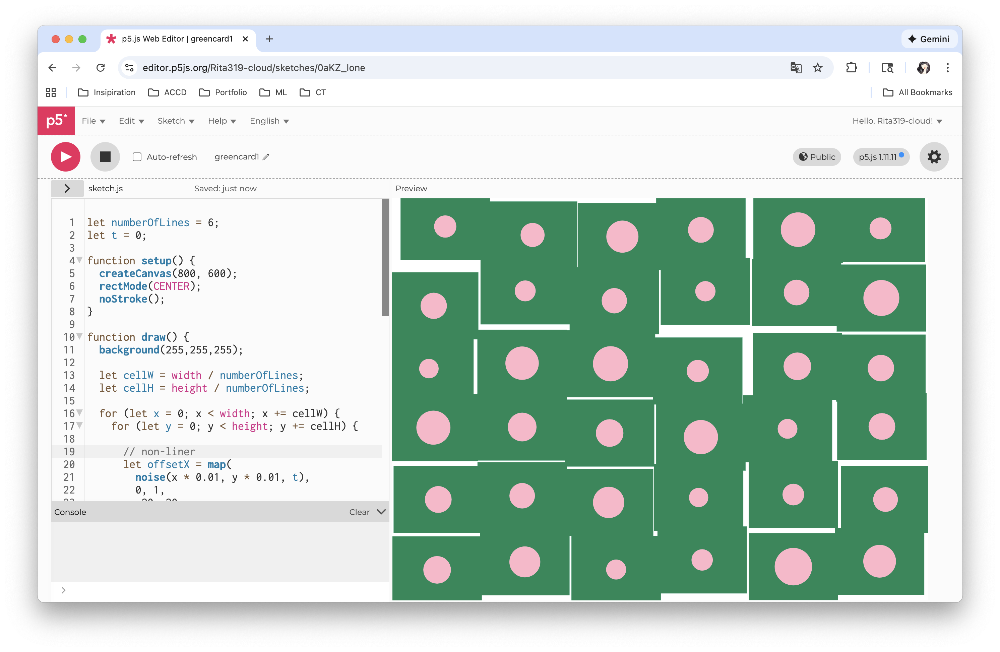
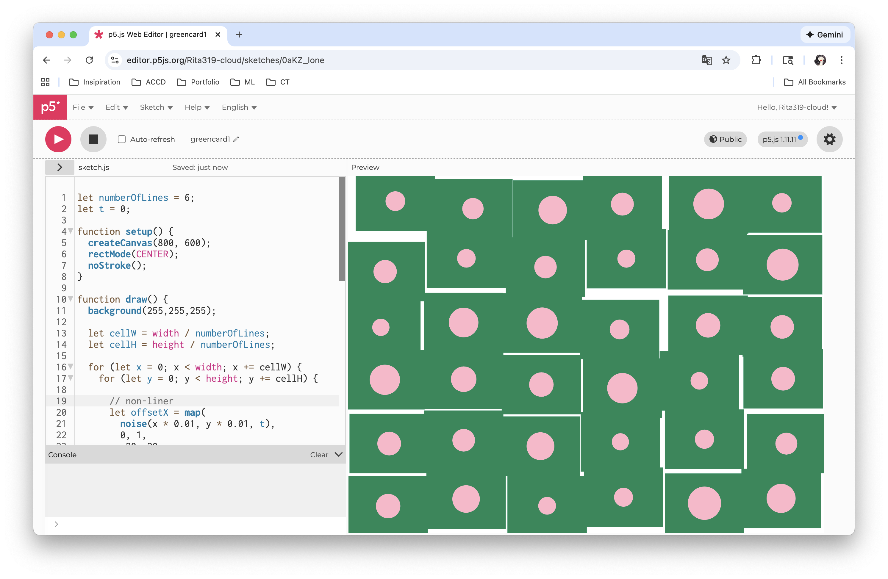

The problems of this assignment are getting familiar with the p5js environment and how it works with visual code and github. I could work on p5js to make something, but we need visual code and github to document. Once I get familiar with this work flow and all the strange nouns I didn't hear very often, it’s not scary anymore. Thanks to all the youtube tutorials in this class, I will go over and digest them again.
The most interesting problem is what non-liner movement is. I thought it would be something very random and unpredictable. It turned out it’s about math, not a crazy visual effect in my head. The flow of the lake, clouds and smoke are non-liner movements, but they are very subtle.
Based on the sketch in the tutorial, I made cards shaking randomly on the canvas. When the cards overlay, the color will change, looking like an overlay effect in print. Added noise in coding helps create the non-liner movement.